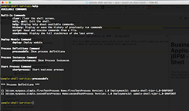

jBPM Business Applications Demo – Process terminal using Spring Shell
So far our jBPM Business Applications demos have involved some sort of web-based UI for interacting with our business processes. Sometimes a web-ui is not needed and working with processes via an interactive terminal is the best way to get this done.
In this demo we show how to use Spring Shell inside your jBPM Business Application created via start.jbpm.org. Here is a quick screenshot of the demo application:
 |
| Demo schreenshot |
We start our demo app as usual using the already provided launch scripts but once it starts we do not launch our browser and go to localhost:8090 (default) to access it, but instead we are presented with a prompt and can start typing in our commands to interact with our business processes.
- deploy <groupId> <artifactId> <version>
- processdefs
- processinstances
- startprocess <processDefId> <deploymentId>
Lastly, the processinstances command shows all process instances that are available, for example:
Finally here is a youtube video where we run the demo and show off all the commands. The video also explains the code and how to create custom commands using Spring Boot and Spring Shell.
Hope this demo helps you guys get some ideas on how to create cool jBPM business apps.

{kind=link}
{kind=link}
{kind=link}
{kind=link}
{kind=link}
{kind=link}